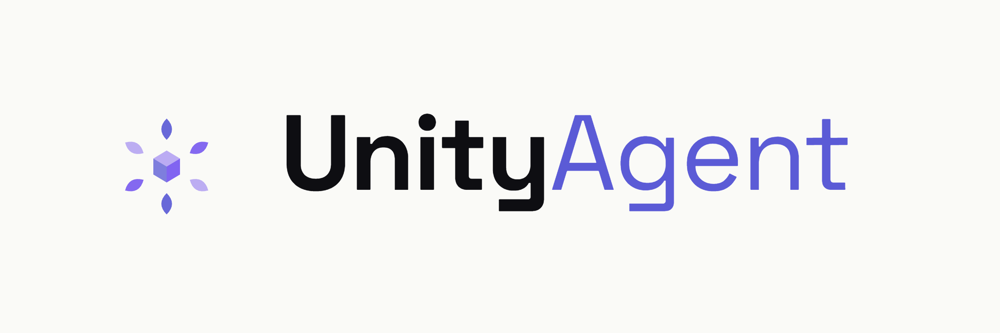
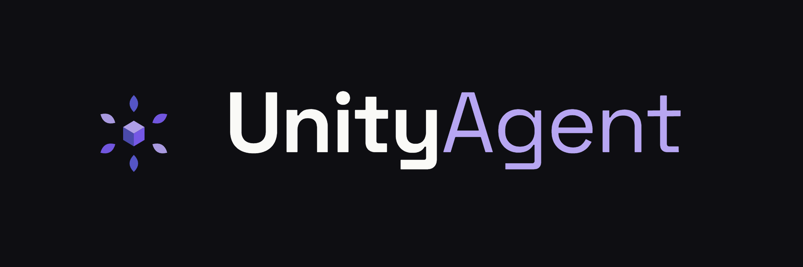

アバター解析と最適化
PhysBone・BlendShape・骨構造を一括検査し、Quest 変換、メッシュ簡略化、テクスチャアトラスまで自動化。
UnityAgent は、VRChat アバター制作のための AI エージェント兼 Editor ユーティリティ集。 500+ 専用ツールを自然言語から呼び出すことも、AI なしで GUI ツール単体として使うこともできます。


FEATURES
一貫した自然言語インタフェースの裏で、UnityAgent は 500+ の専用ツールが連携して動きます。
PhysBone・BlendShape・骨構造を一括検査し、Quest 変換、メッシュ簡略化、テクスチャアトラスまで自動化。
MA メニュー・パラメータ・MergeArmature・FaceEmo をネイティブにサポート。NDMF パイプラインも自然言語で。
lilToon / Poiyomi の一括設定、AO ベイク、UV 検証、TexTransTool 連携で繊細な仕上げまで。
Animator State Machine の編集、FaceEmo 表情パターン、ジェスチャー連動を会話で組み立て。
Claude / GPT / Gemini / DeepSeek / ローカル LLM (Ollama / LM Studio) まで、好みに合わせて選択可能。
MIT ライセンス。難読化なしの完全ソース配布で、改造も商用利用も自由。
STANDALONE
UnityAgent は GUI ユーティリティの集合体としても完成しています。プロバイダー設定なしで使える、独立した Editor ツールを多数同梱。
ボーンポーズ編集・IK・レイヤーシステム・キーリダクションを一画面に統合した独立ツール。
UV アイランド単位の選択ペイント。テクスチャ編集・マスク作成・部分修正が GUI で完結。
ARAP / XPBD / Body SDF を駆使した衣装の自動フィッティング。手動調整不要のプリセットも完備。
不要な BlendShape の検出と一括除去。容量とビルド時間を圧縮。
MaxRects パッカーによる高密度アトラス化。マテリアル統合とドローコール削減を GUI で。
MediaPipe / ROMP / WHAM 連携で動画からモーション抽出。撮影素材から AnimationClip を生成。
※ いずれのツールも UnityAgent ウィンドウから起動できます。LLM プロバイダーの設定は不要です。
TOOLS
すべて自然言語から呼び出せます。下表は主要カテゴリの抜粋です。
※ 各カテゴリ配下に複数の細分化ツールがあり、合計 549 件以上を提供しています。
PROVIDERS
主要なクラウド LLM、CLI 統合、ローカル推論まで、フラットに切り替えできます。
| プロバイダー | 種別 | 認証 | メモ |
|---|
INSTALL
下のボタンから VPM リポジトリを ALCOM / VCC に追加します。
VPM リポジトリを開くUnity プロジェクトを開き、Packages 一覧から「UnityAgent」を追加します。
Unity メニューから AjisaiFlow → UnityAgent を開いて、好きなプロバイダーを設定するだけ。
GitHub Releases から最新 zip を取得します。
Releases を開くプロジェクトの Packages/ フォルダに展開します。
MD3 SDK と VRChat SDK (com.vrchat.avatars) を併せて導入してください。
CHANGELOG
最新の変更点を抜粋しています。すべての履歴は GitHub をご覧ください。
COMMUNITY
質問・要望・バグ報告はコミュニティへ。